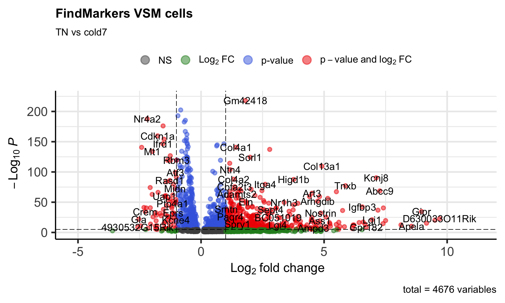
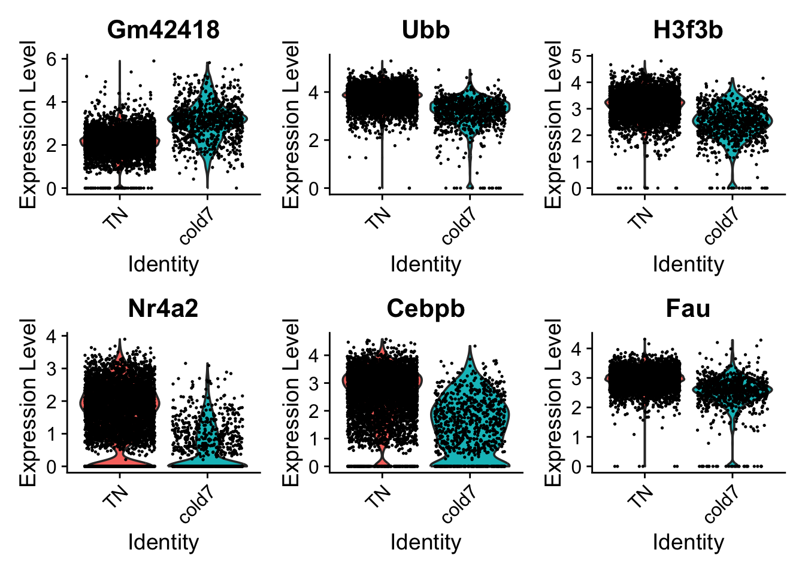
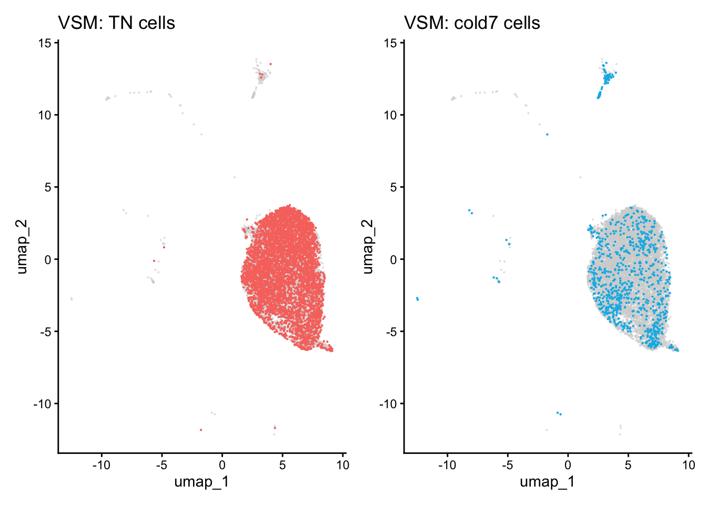

Noor Sohail, Mary Piper, Lorena Pantano, Meeta Mistry, Radhika Khetani, Jihe Liu, Will Gammerdinger
Published
Invalid Date
Approximate time: 75 minutes
Learning Objectives:
Create visualizations for differentially expressed genes
Discuss other statistical tests for differential expression analysis
Significant genes
We want to subset our results to show just our significant genes so we can begin visualizing and analyzing the results. To do this, we filter out rows based upon the p_val_adj column and subsetting only genes that meet our multiple testing-corrected significance threshold of 0.05.
To get a first look at the genes that are retained, we can generated a volcano plot using the EnhancedVolcano() function. This is a visualization that allows us to quickly see trends in the significant genes. The x-axis here represents the average log2-fold change value, showing the degree of difference between the two conditions. On the y-axis, we see our p_val_adj column represented after a negative log10 transformation is applied to better see the spread of the adjusted p-values.
Volcano plots provide a great overview of which genes are up-regulated (positive on the x-axis) or down-regulated (negative on the x-axis).
# Volcano plotp_fm <-EnhancedVolcano(dge_vsm_sig,row.names(dge_vsm_sig),x="avg_log2FC",y="p_val_adj",title="FindMarkers VSM cells",subtitle="TN vs cold7")p_fm

Violin plots
While looking at the overall trends in the data is a great starting point, we can also start looking at genes that have large differences between TN and cold7. To do this, we can take a look at the top 6 genes with the smallest p-values. We additionally disregard the ribsomal genes in this visualization step.
# Get the gene names and get the first 6 values# Ignore ribosomal genesgenes <- dge_vsm_sig %>%rownames_to_column(var="gene") %>%filter(!str_detect(gene, "Rpl|Rps")) %>%head(6)genes <- genes$genegenes
[1] "Gm42418" "Ubb" "H3f3b" "Nr4a2" "Cebpb" "Fau"
With these genes selected, we can now being to visualize the distribution of expression across our two conditions using the VlnPlot() function.
# Set Idents and draw Violin plots for top 6 genesIdents(seurat_vsm) <-"condition"VlnPlot(seurat_vsm, genes, ncol=3, idents=c("TN", "cold7"))

UMAP plots
When comparing two different conditions, we recommend creating a UMAP that clearly shows where the cells exist for each condition. To do so, we first need to get the UMAP coordinates for every cell of interest. When creating the scatterplot, the first thing we do is put a layer of light gray points that show the entire dataset to understand where all the cells fall. Then, we take the UMAP coordinates of the condition (TN or cold7 in our example) and plot those on top with a color to clearly indicate where those cells are located.
Note
This sometimes works better on the non-integrated data, so you observe a true separation of cells by condition.
# Grab the umap coordinates and condition information for each celldf <-FetchData(seurat_vsm, c("umap_1", "umap_2", "condition"))df_tn <- df %>%subset(condition =="TN")df_cold7 <- df %>%subset(condition =="cold7")# Scatterplot of TN cellsp_tn <-ggplot() +geom_point(data=df, aes(x=umap_1, y=umap_2), color="lightgray", alpha=0.5, size =0.1) +geom_point(data=df_tn, aes(x=umap_1, y=umap_2), color="#F8766D", size =0.1) +theme_classic() +ggtitle("VSM: TN cells")# Scatterplot of cold7 cellsp_cold7 <-ggplot() +geom_point(data=df, aes(x=umap_1, y=umap_2), color="lightgray", alpha=0.5, size =0.1) +geom_point(data=df_cold7, aes(x=umap_1, y=umap_2), color="#00B8E7", size =0.1) +theme_classic() +ggtitle("VSM: cold7 cells")# TN and cold7 UMAPs side by sidep_tn + p_cold7

This allows us to better understand our results when we look at any follow-up information on our UMAP. For example, we can begin to look at the distribution of gene expression for each of the top 6 genes with a better understanding of where the cells for each condition lie:
When we looked at the extra explanations for the FindMarkers() function, there was a parameter called test.use. By default, the method for calculating differentially expressed genes will be a Wilcoxon Rank Sum Test. This is a fairly simple statistical approach, and there a multitude of different algorithms that can be specified. These other options are documented on the FindMarkers()documentation page. For this workshop we want to highlight a few of these methods:
Wilcoxon Rank Sum Test
Often described as the non-parametric version of the two-sample t-test.
Beneficial because it can reduce the impact of outliers, which can skew the results of parametric testing.
It ranks the data and compares the sum of ranks within each group, to identify significant differences.
DESeq2
Identifies differentially expressed genes between two groups of cells based on a model using DESeq2 which uses a negative binomial distribution (Love et al., 2014). More information on DESeq2 will be provided in an upcoming lesson in this workshop.
This test option does not support pre-filtering of genes based on average difference (or percent detection rate) between cell groups. However, genes may be pre-filtered based on their minimum detection rate (min.pct) across both cell groups.
Note
The creators of the Seurat package no longer recommend using the FindMarkers() implementation of DESeq2.
MAST
Implements an approach that accounts for the stochastic dropout and characteristic bimodal expression distributions in which expression is either strongly non-zero or non-detectable.
A two-part, generalized linear model for such bimodal data that parameterizes both of these features
Also allows for estimation and control of the “cellular detection rate” (CDR) while simultaneously estimating treatment effects. This addresses the fact that cells scale transcript copy number with cell volume.
Permits the analysis of complex experiments, such as repeated single-cell measurements under various treatments or longitudinal sampling of single cells from multiple subjects with a variety of background characteristics (e.g., sex, age), because it can easily be extended to accommodate random effects.
Note
Instead of using the FindMarkers() implementation, we recommend directly using the MAST algorithm from the package itself for the best results.
If you are interested in exploring code to run MAST on this dataset directly using the package, please see the script at the link below. We recommend including the sample in the model to improve results by taking into account biological variability. Please note that this is a computationally intensive calculation and may take a long time to run.
Click here for code to run MAST on this dataset side-by-side
Note that this R code below uses the MAST library. In order to run this you will need to first install the required packages and then:.
library(Seurat)library(dplyr)library(SingleCellExperiment)library(MAST)# Seurat to SingleCellExperimentDefaultAssay(seurat_vsm) <-"RNA"sce <-as.SingleCellExperiment(seurat_vsm)# Apply log transformationassay(sce, "logcounts") <-log2(counts(sce) +1)# Create new sce object (with only 'logcounts' matrix)sce_1 <-SingleCellExperiment(assays =list(logcounts =assay(sce, "logcounts")))colData(sce_1) <-colData(sce)# Change to SingleCellAssaysca <-SceToSingleCellAssay(sce_1)# Calculate number of genes expressed per cell and scale the valuecdr2 <-colSums(SummarizedExperiment::assay(sca) >0)colData(sca)$cngeneson <-scale(cdr2)# Takes a long time to calculate!# Here our model includes:## The number of genes expressed (ngeneson)## Experimental condition (condition)## Sample as a random variable ((1 | sample))zlmCond <-zlm(~condition + cngeneson + (1| sample), sca, method="glmer", ebayes=FALSE)# Only test the condition coefficient.summaryCond <-summary(zlmCond, doLRT='conditionTN') # Some data wranging of the resultssummaryDt <- summaryCond$datatablefcHurdle <-merge(summaryDt[contrast=='conditionTN'& component=='H',.(primerid, `Pr(>Chisq)`)], # Hurdle P values summaryDt[contrast=='conditionTN'& component=='logFC', .(primerid, coef, ci.hi, ci.lo)], by='primerid') #logFC coefficientsfcHurdle[,fdr:=p.adjust(`Pr(>Chisq)`, 'fdr')]
Source Code
---title: "DE analysis Visualization from FindMarkers"author: "Noor Sohail, Mary Piper, Lorena Pantano, Meeta Mistry, Radhika Khetani, Jihe Liu, Will Gammerdinger"date: Wednesday, February 5th, 2020---Approximate time: 75 minutes```{r}#| label: load_libraries_data#| echo: falselibrary(Seurat)library(tidyverse)library(EnhancedVolcano)seurat <-readRDS("data/BAT_GSE160585_final.rds")# Subset the objectseurat_vsm <-subset(seurat, subset = (celltype =="VSM"))# Set the identsIdents(seurat_vsm) <-"condition"# Set default assayDefaultAssay(seurat_vsm) <-"RNA"# Determine differentiating markers for TN and cold7dge_vsm <-FindMarkers(seurat_vsm,ident.1="cold7",ident.2="TN" )```# Learning Objectives:* Create visualizations for differentially expressed genes* Discuss other statistical tests for differential expression analysis# Significant genesWe want to subset our results to show just our significant genes so we can begin visualizing and analyzing the results. To do this, we filter out rows based upon the `p_val_adj` column and subsetting only genes that meet our multiple testing-corrected significance threshold of 0.05.```{r}#| label: subset_sig_genes# Subset significant genesdge_vsm_sig <- dge_vsm %>%subset(p_val_adj <0.05)dge_vsm_sig %>%head()```# Volcano plotTo get a first look at the genes that are retained, we can generated a volcano plot using the `EnhancedVolcano()` function. This is a visualization that allows us to quickly see trends in the significant genes. The x-axis here represents the average log2-fold change value, showing the degree of difference between the two conditions. On the y-axis, we see our `p_val_adj` column represented after a negative log10 transformation is applied to better see the spread of the adjusted p-values. Volcano plots provide a great **overview of which genes are up-regulated (positive on the x-axis) or down-regulated (negative on the x-axis)**.```{r fig.width=10, fig.height=6}#| label: volcano_plot# Volcano plotp_fm <-EnhancedVolcano(dge_vsm_sig,row.names(dge_vsm_sig),x="avg_log2FC",y="p_val_adj",title="FindMarkers VSM cells",subtitle="TN vs cold7")p_fm```# Violin plotsWhile looking at the overall trends in the data is a great starting point, we can also start looking at genes that have large differences between `TN` and `cold7`. To do this, we can take a look at the top 6 genes with the smallest p-values. We additionally disregard the ribsomal genes in this visualization step.```{r}#| label: top_6_sig_genes# Get the gene names and get the first 6 values# Ignore ribosomal genesgenes <- dge_vsm_sig %>%rownames_to_column(var="gene") %>%filter(!str_detect(gene, "Rpl|Rps")) %>%head(6)genes <- genes$genegenes```With these genes selected, we can now being to visualize the distribution of expression across our two conditions using the `VlnPlot()` function.```{r}#| label: create_violin_plot# Set Idents and draw Violin plots for top 6 genesIdents(seurat_vsm) <-"condition"VlnPlot(seurat_vsm, genes, ncol=3, idents=c("TN", "cold7"))```# UMAP plotsWhen comparing two different conditions, we recommend creating a UMAP that clearly shows where the cells exist for each condition. To do so, we first need to get the UMAP coordinates for every cell of interest. When creating the scatterplot, the first thing we do is put a layer of light gray points that show the entire dataset to understand where all the cells fall. Then, we take the UMAP coordinates of the condition (`TN` or `cold7` in our example) and plot those on top with a color to clearly indicate where those cells are located. ::: callout-noteThis sometimes works better on the non-integrated data, so you observe a true separation of cells by condition.:::```{r}#| label: create_UMAP# Grab the umap coordinates and condition information for each celldf <-FetchData(seurat_vsm, c("umap_1", "umap_2", "condition"))df_tn <- df %>%subset(condition =="TN")df_cold7 <- df %>%subset(condition =="cold7")# Scatterplot of TN cellsp_tn <-ggplot() +geom_point(data=df, aes(x=umap_1, y=umap_2), color="lightgray", alpha=0.5, size =0.1) +geom_point(data=df_tn, aes(x=umap_1, y=umap_2), color="#F8766D", size =0.1) +theme_classic() +ggtitle("VSM: TN cells")# Scatterplot of cold7 cellsp_cold7 <-ggplot() +geom_point(data=df, aes(x=umap_1, y=umap_2), color="lightgray", alpha=0.5, size =0.1) +geom_point(data=df_cold7, aes(x=umap_1, y=umap_2), color="#00B8E7", size =0.1) +theme_classic() +ggtitle("VSM: cold7 cells")# TN and cold7 UMAPs side by sidep_tn + p_cold7```This allows us to better understand our results when we look at any follow-up information on our UMAP. For example, we can begin to look at the distribution of gene expression for each of the top 6 genes with a better understanding of where the cells for each condition lie:```{r}#| label: create_feature_plot# Create Feature PlotFeaturePlot(seurat_vsm, genes, ncol=3)```# Other statistical testsWhen we looked at the extra explanations for the `FindMarkers()` function, there was a parameter called `test.use`. By default, the method for calculating differentially expressed genes will be a Wilcoxon Rank Sum Test. This is a fairly simple statistical approach, and there a multitude of different algorithms that can be specified. These other options are documented on the `FindMarkers()`[documentation page](https://www.rdocumentation.org/packages/Seurat/versions/5.0.3/topics/FindMarkers). For this workshop we want to highlight a few of these methods:# Wilcoxon Rank Sum Test* Often described as the non-parametric version of the two-sample t-test. * Beneficial because it can reduce the impact of outliers, which can skew the results of parametric testing.* It ranks the data and compares the sum of ranks within each group, to identify significant differences.# DESeq2* Identifies differentially expressed genes between two groups of cells based on a model using DESeq2 which uses a negative binomial distribution ([Love et al., 2014](https://genomebiology.biomedcentral.com/articles/10.1186/s13059-014-0550-8)). More information on DESeq2 will be provided in an upcoming lesson in this workshop.* This test option does not support pre-filtering of genes based on average difference (or percent detection rate) between cell groups. However, genes may be pre-filtered based on their minimum detection rate (min.pct) across both cell groups.::: callout-noteThe creators of the Seurat package [no longer recommend](https://github.com/satijalab/seurat/issues/2938) using the `FindMarkers()` implementation of DESeq2.::: # MAST* Implements an approach that accounts for the stochastic dropout and characteristic bimodal expression distributions in which expression is either strongly non-zero or non-detectable. * A two-part, generalized linear model for such bimodal data that parameterizes both of these features * Also allows for estimation and control of the “cellular detection rate” (CDR) while simultaneously estimating treatment effects. This addresses the fact that cells scale transcript copy number with cell volume. * Permits the analysis of complex experiments, such as repeated single-cell measurements under various treatments or longitudinal sampling of single cells from multiple subjects with a variety of background characteristics (e.g., sex, age), because it can easily be extended to accommodate random effects.::: callout-noteInstead of using the `FindMarkers()` implementation, we recommend directly using the [MAST](https://genomebiology.biomedcentral.com/articles/10.1186/s13059-015-0844-5) algorithm from the package itself for the best results.If you are interested in exploring code to run MAST on this dataset directly using the package, please see the script at the link below. We recommend including the sample in the model to improve results by taking into account biological variability. Please note that this is a **computationally intensive** calculation and may take **a long time to run**.<details><summary><b><i>Click here for code to run MAST on this dataset side-by-side</i></b></summary>Note that this R code below uses the <b>MAST library</b>. In order to run this you will need to first install the required packages and then:.```{r}#| label: MAST_example#| eval: falselibrary(Seurat)library(dplyr)library(SingleCellExperiment)library(MAST)# Seurat to SingleCellExperimentDefaultAssay(seurat_vsm) <-"RNA"sce <-as.SingleCellExperiment(seurat_vsm)# Apply log transformationassay(sce, "logcounts") <-log2(counts(sce) +1)# Create new sce object (with only 'logcounts' matrix)sce_1 <-SingleCellExperiment(assays =list(logcounts =assay(sce, "logcounts")))colData(sce_1) <-colData(sce)# Change to SingleCellAssaysca <-SceToSingleCellAssay(sce_1)# Calculate number of genes expressed per cell and scale the valuecdr2 <-colSums(SummarizedExperiment::assay(sca) >0)colData(sca)$cngeneson <-scale(cdr2)# Takes a long time to calculate!# Here our model includes:## The number of genes expressed (ngeneson)## Experimental condition (condition)## Sample as a random variable ((1 | sample))zlmCond <-zlm(~condition + cngeneson + (1| sample), sca, method="glmer", ebayes=FALSE)# Only test the condition coefficient.summaryCond <-summary(zlmCond, doLRT='conditionTN') # Some data wranging of the resultssummaryDt <- summaryCond$datatablefcHurdle <-merge(summaryDt[contrast=='conditionTN'& component=='H',.(primerid, `Pr(>Chisq)`)], # Hurdle P values summaryDt[contrast=='conditionTN'& component=='logFC', .(primerid, coef, ci.hi, ci.lo)], by='primerid') #logFC coefficientsfcHurdle[,fdr:=p.adjust(`Pr(>Chisq)`, 'fdr')]```</details>:::